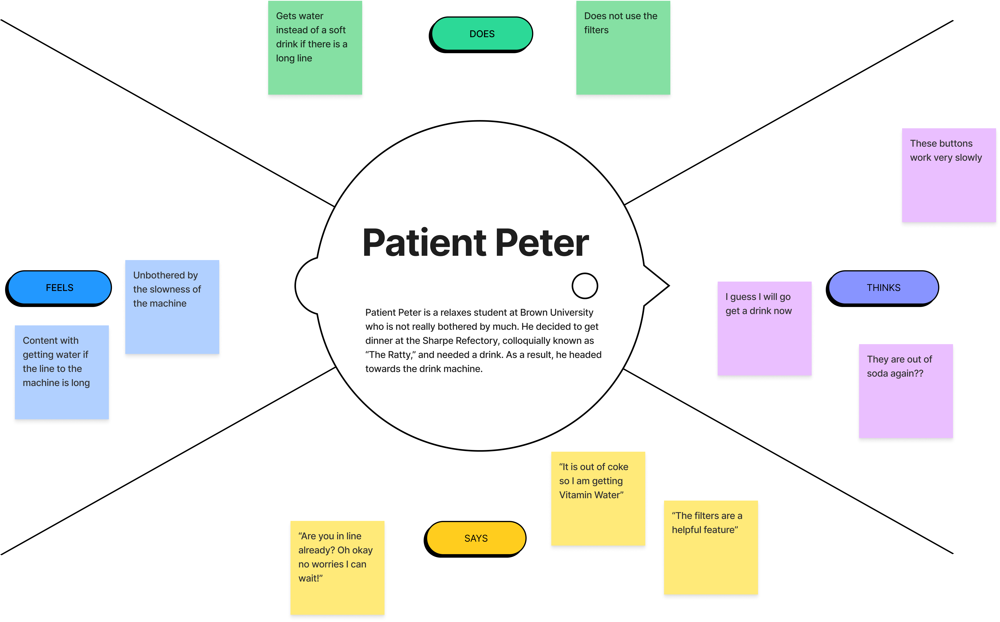
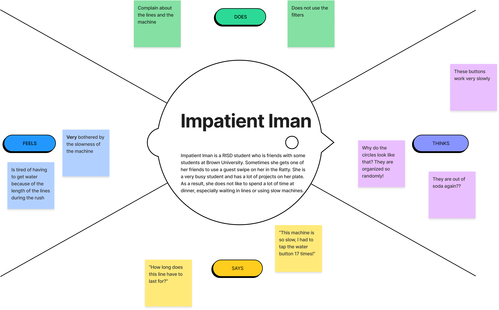
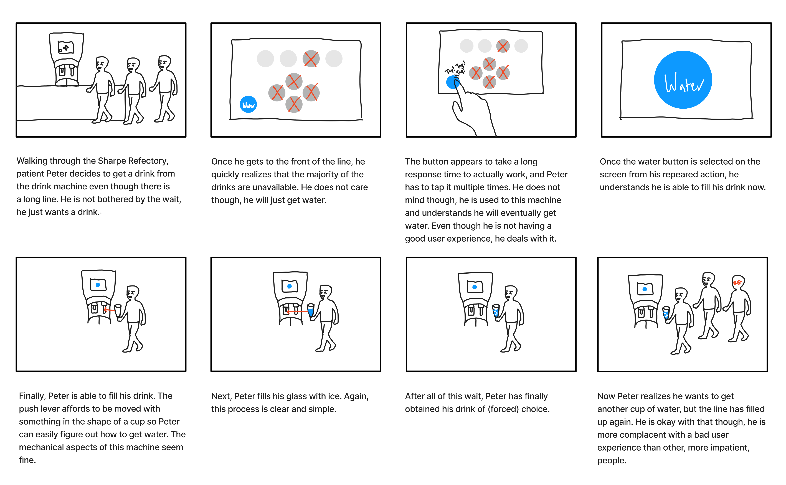

Personas & Storyboarding
The interface I have selected is the Coca Cola vending machine in the back of the Sharpe Refectory at Brown University. I prepared some questions that I could use to interview random users (with their consent):
- Do you like this interface?
- Would you change, add, or remove anything from this interface? You can say no if you cannot think of anything.
- What do you, if anything, if there is a line at the machine?
- Do you always get the same drink?
Description
This machine is able to efficiently provide students with access to many types of soft drinks without taking up a ridiculous amount of space. As a result, it provides dining halls an easy way to give students many options without allocating a ton of space or money to many types of machines. It works by mxing the syrups for a wide variety of drinks with the same standard soda or water base. There is a screen which provides a touch interface for users to select their drinks or even filter the type of drinks displayed. There is also a lever which is triggered by pushing a cup into it which dispenses the selected drink. There is also another lever which is triggered in a similar fashion to dispense ice. Lastly, users are able to pour their drinks into the drain which keeps the immediate surrounding surface cleaner than if spills were just poured onto the countertop.
Observation
-
Some users will not use this machine if there is a line
- I observed that some users would rather just go get a different drink - such as water or milk - then use this machine if there is a line
- Some users do not seem to care if there is a line
- Users will not reset this machine to the home screen after filling up their cup
- Users may use the drain to empty their cups into
- Users do not use the filters
-
Users tend to spam inputs if the screen is operating slowly
- Continuously tapping the water button until it is "selected"
- Some users will be more patient, others more impatient
Interview
-
Do you like this interface?
The first student I talked to expressed mostly distaste for the interface: "It is annoying to navigate and can be really laggy," he said. The second student expressed her distaste with the availability of the drinks - denoted by greyed out circles on the screen: "Most of the drinks are usually not full," she said. The third student expressed that he did not really have any opinion on it.
-
Would you change, add, or remove anything from this interface? You can say no if you cannot think of anything.
The first student noted that he would prefer a different organizational structure as the circles did not make much sense to him and the next two did not have any significant comments.
-
What do you, if anything, if there is a line at the machine?
Two of the students shared that they would revert to another alternative, such as the water or milk.
-
Do you always get the same drink?
Every student shared that they usually select between 1-2 sodas or water.
In this section, I am introducing two character archetypes that typify the type of users interacting with this interface. Since they both are dealing with the same interface, they both deal with the same problems:
- Long lines to the machine
- Slow processor makes working with the machine difficult
- Lack of supply causes many of the drinks to be unavailable which is unclear from far away due to the inconspicuous marker for "unavailable"
Patient Peter
Patient Peter is a complacent user - someone who waits in a line for an inefficient machine when others would not. This persona represents some of the users I interviewed who expressed a "this is fine" attitude towards this interface. The machine works, sometimes; but it works well enough to make users like patient peter accept the reality of the situation.

Impatient Iman
Impatient Iman is a non-complacent user - someone who will simply find alternative options rather than waste her time waiting in line for a machine that, albeit does contain more options, is slow and annoying to use. This persona represents some of the users I interviewed who expressed that when there is a line they will simply go get milk or water.

This storyboard follows Patient Peter across his journey to get a drink from the machine!
